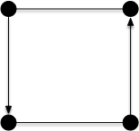

Parcours Eulériens
Voir grâce à l'exemple des circuits eulériens ce qu'est un chemin, un cycle, et nos premiers algorithmes de graphes.
Le problème concret ou "comment ne pas aller se promener"
C'est un retour aux sources s'il l'on peut dire puisqu'il s'agit du problème des 7 ponts de Königsberg, qui permit à Euler d'inventer la théorie des graphes pour éviter d'aller se balader.
La ville de Kaliningrad (anciennement appelée Königsberg) possédait 7 ponts aux 18ème siècle qui enjambent la Pregel. Ca ressemblait un peu à ça (cliquez sur l'image pour voir les ponts en vrai sur google maps):

L'histoire veut qu'une tradition bourgeoise (et noble) de l'époque soit de faire les ballades digestives autour de ces ponts en essayant de tous les traverser une fois et de revenir à son point de départ.
Personne n'y arrivant, le jeu devint fort populaire. Sauf qu'Euler, s'il y a bien une chose qu'il n'aimait pas, c'était les ballades.
Du coup, un après-midi, plutôt que d'aller se balader il griffonna le schéma suivant sur un coin de nappe et démontra à l'assistance médusée qu'il était impossible de faire ce qu'ils voulaient faire et que donc il préférait reprendre un peu de tarte que d'essayer un truc impossible.
Euler avait d'un coup prix 1kg et inventé la théorie des graphes. Le dessin qu'Euler griffonna était celui-ci :

C'est un multi-graphe non orienté et est une modélisation du problème, les sommets $A$, $B$, $C$ et $D$ représentant les quatre berges de la ville et les arêtes les 7 ponts.
Le problème revient maintenant de trouver un cycle qui passe par toutes les arêtes du multi-graphe.
Problème de graphe
Définition
Soit $G= (V, E)$ un multi-graphe non orienté. Un cycle eulérien de $G$ est un cycle passant par toutes les arêtes du graphe.
Comme les arêtes d'un cycle n'y apparaissent qu'une seule fois, un cycle eulérien passe exactement une fois par toutes les arêtes du graphe.
C'est impossible dans l'exemple
Avec notre graphe c'est impossible car il faut pouvoir repartir d'un sommet après en être arrivé. Si un tel cycle existait pour tout $u_i$ : $u_{i-1}u_i$ et $u_iu_{i+1}$ seraient des arêtes du graphes. Comme le chemin passe une seule fois par chaque arête du graphe on en conclut que $\delta(u_i)$ serait paire.
Comme $\delta(C) = 3$ et est impair, il est impossible de trouver un cycle eulérien dans notre graphe.
Une implication
La remarque précédente nous donne une implication importante :
Remarque
S'il existe un cycle eulérien pour un multi-graphe non-orienté $G$, alors tout sommet de ce graphe est de degré pair.
La réciproque sur un exemple ?
Le graphe suivant a tous ses degrés pair :

Pouvez-vous trouver un cycle eulérien ?
solution
solution
Oui c'est possible avec l'ordre dans lequel examiner les sommets du chemin.

Mais il y en a plein d'autres possibles !
Equivalence
Ce qui est très beau c'est que la réciproque complète est vraie. On a le théorème suivant :
Proposition
Un multi-graphe non orienté connexe admet un cycle eulérien si et seulement si le degré de tout ses sommets est pair.
démonstration ⇒
démonstration ⇒
On l'a déjà prouvé, mais refaisons le pour la complétion.
Si un cycle Eulérien $u_0 \dots u_k$ existe, à chaque $u_i$ : $u_{i-1}u_i$ et $u_iu_{i+1}$ sont des arêtes du graphes. Comme le chemin passe une seule fois par chaque arête du graphe, à chaque fois que l'on rencontre un sommet donné $x$, on lui trouve 2 nouvelles arêtes. On en conclut que $\delta(x)$ est égal au nombre de fois où $x$ apparaît dans le cycle fois 2 : c'est donc pair.
démonstration ⇐
démonstration ⇐
- Comme notre graphe est eulérien et connexe, les degrés de tous les sommets sont pairs et strictement positif : donc supérieur ou égal à 2. Il existe alors un cycle dans notre graphe.
- en supprimant le cycle du graphe, on obtient toujours un graphe dont les degrés sont pairs (en supprimant un cycle on a supprimé un nombre pair d'arête pour chaque sommet apparaissant dans le cycle)
- on supprime tous les sommets de degrés 0.
- on est ramené à notre hypothèse de départ, c'est à dire un graphe où tous les sommets sont de degrés pairs et strictement positif.
L'algorithme ci-dessus nous permet de décomposer notre graphe en une série de cycles, disons qu'il y en a $m$. Il nous reste à former un énorme cycle à partir de ces petits cycle.
Pour cela, comme le graphe est connexe il va exister deux cycles $C_1$ et $C_2$ qui partagent un sommet $x$. On peut alors faire commencer les cycles $C_1$ et $C_2$ par $x$ et on peut coller les deux cycles ensemble en formant le cycle : $C_1 + C_2[1:]$. On est passé de $m$ cycles à $m-1$ cycles et on peut recommencer la procédure jusqu'à n'obtenir qu'un unique cycle qui est notre cycle eulérien.
Trouver un cycle Eulérien
Codons l'algorithme de cycle eulérien.
Encodage
On va se restreindre aux graphes non-orienté. Pour cela, notre codage par dictionnaire fonctionne tout à fait. Prenons par exemple le graphe :

Il se code en :
G = {
"1": {"2", "3"},
"2": {"1", "3", "4", "5"},
"3": {"1", "2", "4", "5"},
"4": {"2", "3", "5", "6"},
"5": {"2", "3", "4", "6"},
"6": {"4", "5"},
}Ajoutons tout de suite une fonction pour copier le graphe, puisque notre algorithme va petit à petit supprimer ses arêtes :
def copie(G):
G_copie = dict()
for x in G:
G_copie[x] = set(G[x])
return G_copie
G2 = copie(G)Il faut aussi copier les valeurs du dictionnaire (les ensembles) !
On aurait pu faire la copie en une ligne avec les list comprehension de python : G2 = {x: set(y) for x, y in G.items()}
Principe de l'Algorithme
La démonstration de la réciproque donne également un algorithme de construction d'un cycle Eulérien pour un multi-graphe $G = (V, E)$ vérifiant les conditions du théorème d'existence de cycle Eulérien :
les_cycles = []
while G:
c = cycle(G)
les_cycles.append(c)
supprime_arêtes_du_cycle(c, G)
supprime_sommets_degré_zéro(G)
concatène_cycles(les_cycles)
cycle_eulérien = cycles[0]Où cycle(G) est un algorithme permettant de trouver un cycle pour G. Sur le graphe précédant cela donne :
1ère itération
En prenant $1231$ comme premier cycle :

2ème itération
En prenant $35243$ comme second cycle :

3ème itération
Enfin, le troisième cycle est $4564$ :

Concaténation des cycles
Une fois le graphe vidé, on concatène les cycles ensemble en collant deux à deux des cycles ayant un élément en commun. Ici, en commençant par concaténer le second $43524$ et troisième cycle $4564$ ensemble en $43524564$. On peut ensuite rajouter le premier cycle faisant commencer le cycle $43524564$ par deux $24564352$ puis en les collant ensemble $24564352312$ pour donner le cycle eulérien final.
Trouver un cycle
Trouver un cycle peut se faire en utilisant l'algorithme du cours cycle_non_orienté(G,x) (même s'il n'est pas optimal, pour de petits graphes le temps de calcul ne sera pas rédhibitoire). Il faut juste trouver un sommet de départ. Si on s'arrange pour supprimer du graphe les sommets sans arêtes, on peut prendre n'importe lequel :
def cycle(G):
if not G:
return []
a = list(G.keys()).pop()
return cycle_non_orienté(G, a)On a ajouté une sentinelle qui traite le cas où $G$ est vide. Ceci permet de rendre un cycle (même vide) quelque soit le graphe.
Sans cette sentinelle, l'algorithme planterait car on ne peut pop une liste vide.
Décomposition du graphe en cycles
Commençons par créer une fonction qui supprime un cycle du graphe :
def supprime_arêtes_du_cycle(c, G):
x = c[0]
for y in c[1:]:
G[x].remove(y)
G[y].remove(x)
x = yPuis supprimons les sommets de degré zéro :
def supprime_sommets_degré_zéro(G):
sommets = list(G.keys())
for x in sommets:
if len(G[x]) == 0:
del G[x]On ne modifie jamais ce sur quoi on itère !
Ici on commence par récupérer la liste des sommets de $G$ (les clés du dictionnaire G) avant peut-être de modifier G (supprimer des cls du dictionnaire).
Puis, en affichant les cycles trouvés par l'algorithme général de décomposition :
les_cycles = []
while G:
c = cycle(G)
les_cycles.append(c)
supprime_arêtes_du_cycle(c, G)
supprime_sommets_degré_zéro(G)
print(les_cycles)
J'obtiens (il y a d'autres possibilités) :
[['1', '2', '5', '3', '1'], ['4', '2', '3', '4'], ['5', '4', '6', '5']]Concaténation de deux cycles
Pour concaténer deux cycles ensemble, il faut pouvoir faire commencer un cycle par un sommet donné x :
def décale(cycle, x):
cycle = cycle[:-1]
i = cycle.index(x)
return cycle[i:] + cycle[:i] + [cycle[i]]Puis coller deux cycles par un sommet commun x :
def concatène(c1, c2, x):
c1 = décale(c1, x)
c2 = décale(c2, x)
return c1 + c2[1:]Concaténation de tous les cycles
Il suffit d'itérer le processus pour deux cycles en cherchant des cycles ayant un élément en commun :
def concatène_cycles(cycles):
while len(cycles) > 1:
c = cycles.pop()
for i in range(len(cycles)):
intersection = set(c).intersection(set(cycles[i]))
if intersection:
x = intersection.pop()
cycles[i] = concatène(cycles[i], c, x)
break
La fonction concatène_cycles modifie la liste cycles passé en paramètres : à la fin de l'algorithme cycles ne contient plus qu'un seul élément : le cycle eulérien.
J'obtiens, avec les cycles précédents :
['3', '1', '2', '5', '4', '6', '5', '3', '4', '2', '3']Généralisation
Il existe de nombreuses généralisations aux cycles eulérien. Citons en trois : les chemins eulériens, les circuits eulériens des graphes orientés et les cycles Eulérien des graphes mixtes.
Chemin eulérien
Définition
Soit $G= (V, E)$ un multi-graphe non orienté. Un chemin eulérien entre $x$ et $y$ est un chemin entre $x$ et $y$ qui prend toutes les arêtes du graphe
Connaître les multigraphes qui possèdent un chemin eulérien est facile à partir de la caractérisation des graphes eulérien :
Proposition
Un multi-graphe non orienté $G= (V, E)$ possède un chemin eulérien entre deux de ses sommets $x$ et $y$ si et seulement si :
- les degrés des sommets $x$ et $y$ sont impair
- les degrés des autres sommets sont tous pair.
preuve
preuve
Un multigraphe possède un chemin eulérien si et seulement si $G'= (V, E \cup \{xy\})$ possède un cycle eulérien.
Graphes orientés
Définition
Soit $G= (V, E)$ un multi-graphe orienté. Un circuit eulérien de $G$ est un circuit passant par tous les arcs du graphe.
La encore les multi-graphes orientés qui possèdent un circuit eulérien est facile à partir de la caractérisation des graphes eulérien :
Proposition
Un multi-graphe orienté $G= (V, E)$ possède un circuit eulérien si et seulement si on a $\delta^+(x) = \delta^-(x)$ pour tout sommet $x$.
preuve
preuve
Tout circuit rentre et sort de chaque sommet du cycle, on a donc clairement que l'existence d'un circuit eulérien implique $\delta^+(x) = \delta^-(x)$ pour tout sommet $x$.
Réciproquement, l'exercice sur les degrés d'un graphe orienté montre l'existence d'un circuit pour des graphes où $\delta^+(x) = \delta^-(x) \geq 1$ pour tout $x$.
Les multi-graphe (orientés) qui possèdent un circuit eulérien sont exactement les multi-graphes où .
Graphes mixtes
Le cas d'intérêt pratique des circuit eulérien est lorsque l'on utilise des multi-graphes mixtes puisqu'ils permettent de modéliser un réseau routier avec des routes à sens unique ou à double sens et plusieurs routes menant à des mêmes croisements.
Définition
Soit $G= (V, E, A)$ un multi-graphe mixte. Un circuit eulérien de $G$ est alors un circuit de $G$ prenant tous les arc et toutes les arêtes de $G$.
Ce qui est intéressant ici, c'est que la condition nécessaire et suffisante pour que le multi-graphe mixte soit eulérien n'est pas juste l'union des conditions pour les multi-graphes non orienté et orienté. S'il est clair que l'union de ces deux conditions fonctionne (tout se passe comme si on avait deux graphes disjoints que l'on raboute ensuite), la condition nécessaire et suffisante est plus générale comme le montre l'exemple suivant, qui fonctionne mais ne correspond pas à l'union des conditions orientées et non orientées :

Pour que cela fonctionne, on doit modifier la condition de parité pour prendre en compte les deux types d'arêtes et ajouter une condition dites d'équilibre :
Proposition
Un (multi-)graphe mixte $G$ possède un circuit eulérien si et seulement si :
- il est pair : pour tout sommet $x$ le nombre $\delta(x) + \delta^+(x) + \delta^-(x)$ est pair
- il est équilibré : quelque soit $S \subseteq V$ :
$$ \vert \{ xy \in A \mid x \in S, y \in V \backslash S\} \vert - \vert \{ yx \in A \mid x \in S, y \in V \backslash S\} \vert \leq \vert \{ xy \in E \mid x \in S, y \in V \backslash S\} \vert $$
preuve
preuve
Tout d'abord, on peut toujours s'arranger pour que $ \vert \{ xy \in A \mid x \in S, y \in V \backslash S\} \vert - \vert \{ yx \in A \mid x \in S, y \in V \backslash S\} \vert$ soit positif, au pire on prend le complémentaire $S\backslash V$ de $S$.
La condition d'équilibre est nécessaire puisque si un circuit eulérien existe il faut pouvoir passer un nombre égal de fois de $V$ à $S\backslash V$ et de $S\backslash V$ à $S$. De plus comme pour le circuit eulérien on entre et on sort de chaque sommet à chacune de ses apparition sur le cycle la parité est également nécessaire.
Réciproquement, si le degré est pair, on peut trouver un cycle mixte au multi-graphe mixte en utilisant la technique classique et en progressant s'il existe un arc ou une arête permettant de faire grandir le chemin, soit en reculant car s'il n'existe pas d'arc sortant du chemin, il existe forcément un arc (ou une arête entrant).
Le supprimer du graphe va conserver les deux propriétés puisque sur ce cycle, on va rentrer et sortir un nombre égal de fois de tout $V \subseteq V$. On peut donc procéder itérativement, comme on l'a fait pour le multi-graphe non orienté, pour trouver un circuit mixte eulérien à notre multi-graphe mixte.